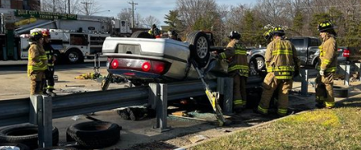

Shawn M. Sullivan

Current Address: 4204 Avon Drive, Dumfries, VA, 22025
540-903-4581 (c)
sullivansm15@gmail.com
SUMMARY STATEMENT
Electrical and Computer Engineering graduate with nine years of information technology and leadership experience in government and commercial industries. Responsible for building, securing, and maintaining both classified and commercial networks. Actively pursues learning advanced technical knowledge through certifications and self-study. Strong computer, written, and verbal communication skills with customers, coworkers, and superiors.
CLEARANCE
Active TS/SCI with CI Polygraph; eligibility date Aug 07, 2023
PROFESSIONAL WORK EXPERIENCE
Network Engineer III
V2X
July 2023 to Present
- Design and install critical network communications between current and new locations
- Analyze customer requirements and provide technical solutions to a wide range of difficult problems
- Brief challenging technical concepts to non-technical senior leadership
- Write scripts in Windows Powershell and Python to automate repetitive tasks
- Deploy, maintain, and troubleshoot VQ Call Manager, Cisco Unified Call Manager, Citrix ADC, and Secureview
- Coordinate between vendors and stakeholders to ensure delivery of projects on time and under budget
Network Engineer Advisor
ARMA Global (a General Dynamics Information Technology subsidiary)
March 2022 to July 2023
- Design, deploy, and maintain Cisco DNA Center
- Design and install critical network communications between current and new locations
- Analyze customer requirements and provide technical solutions to a wide range of difficult problems
- Provide documentation on network procedures and mentoring to the network technician staff
- Review the work of others to detect errors or needed modifications
- Perform maintenance and upgrade of networks including servers, routers, switches, firewalls, and remote access systems
- Analyze network performance, conduct statistical tests, and create solutions to network problems, often highly complex in nature
Information Technology Project Manager
ARMA Global (a General Dynamics Information Technology subsidiary)
February 2021 to March 2022
- Develops comprehensive project plans capturing short-range and long-range goals
- Communicates with stakeholders throughout the project life-cycle
- Coordinates acquisition of hardware and software required for project completion
- Implement agile and waterfall project management methods
- Provides leadership and guidance to subordinate staff
Senior Network Administrator
ARMA Global (a General Dynamics Information Technology subsidiary)
March 2018 to February 2021
- Solve conflicts through actionable solutions between customer requirements and achievable objectives
- Advise customer on available equipment before they submit a request for support
- Delegate tasks between systems and network personnel to fulfill customer requests
- Manage customer satisfaction by developing user manuals, end-user training, field testing, and receiving feedback
- Consult with end users to troubleshoot problems and create solutions to prevent future incidents
- Maintain and test KLAS communications packages to meet immediate customer needs
- Build systems and computers to satisfy customer requirements
- Develop and implement scripts to streamline configurations of network devices
- Set up and troubleshoot Panther and Hawkeye satellite terminals
- Develop and implement course materials to train service members on networking, satellite communications, servers, and imaging and encrypting laptops
Network Support Engineer
Cisco Meraki
March 2017 to March 2018
- Lead a team to troubleshoot issues for high-priority customer cases until the problem is resolved to the customer’s satisfaction.
- Work closely with customers and peers to troubleshoot Cisco Meraki firewalls, switches, access points, cameras, phones, and mobile device management
- Analyze Wireshark packet captures to troubleshoot problems with VLANs, DHCP, Active Directory, firewall rules, Routing, VPNs, and wireless
- Navigate Linux directories to check logs for troubleshooting and write scripts using Ruby/bash for scripts to pull large amounts of data, or monitor changes over time
- Communicate clearly with customers and third parties both orally and in writing to find resolutions for technical issues
Network Administrator (Intermediate)
ARMA Global (a General Dynamics Information Technology subsidiary)
July 2015 to March 2017
- Configure Cisco equipment including ASA5505, ASA5510, ASA5520 firewalls, 3750 and 2960 switches, and 2911 and 2921 routers
- Provide Tier Level 3 support for Specialized Automated Mission Suite, research and produce configuration and software upgrades to remain compliant with DISA’s Security Technical Implementation Guides
- Worked with team to redesign airborne network to enable multicast and EIGRP reducing high-definition video latency by nearly 75% (12-15 seconds of latency to 3 - 5 seconds)
- Perform checks on aircraft for connectivity and video quality
EDUCATION
Virginia Military Institute
Bachelor of Science in Electrical and Computer Engineering (ECE)
Graduation Date: May 2015
CERTIFICATIONS
Cisco
- 200-120 CCNA Routing and Switching Expires July 28 2026
- 300-401 CCNP Enterprise Core (ENCOR) Expires July 28 2026
- 300-410 CCNP Implementing Cisco Enterprise Advanced Routing and Services (ENARSI) Expires July 28 2026
- CCIE Enterprise Infrastructure #67728 Expires July 28 2026
CompTIA
- CompTIA Security Plus CE Expires August 2024
Project Management Institute
- Project Management Professional Expires July 2024
Volunteer
EMT/Firefighter
Franconia Volunteer Fire and Rescue Department
September 2018 - December 2022
EMT/Firefighter
Dale City Volunteer Fire and Rescue Department
June 2022 - Present